Session tape · the making of v2 · Sunday 1 November 2026
Four prompts in. A website you can talk to, out.
How Claude Code built Sanket, Out Loud — version two of sankettambare.in, for Wispr Flow's hiring challenge — in one afternoon. Every prompt, decision and bug in these thirty-four tracks is replayed from the session's own record.
← → or swipe · P plays it aloud · I for tracks · scrub the multitrack below
- 1The reel201 tool calls, wound on in the order they ran.
- 2The counterThe session clock. Every track is stamped with its moment.
- 3The keysFour prompts pressed them — 255 words in all.
Side A · the site
The brief: say who you are, out loud.
Wispr Flow's seven-day hiring challenge (28 October – 4 November 2026) asked for an interactive window into four things — and asked for it with your voice. Claude fetched the challenge page ten seconds into the session. Each question became a door into a chapter of the site.
The chances you took
A first 10K at 1:26. A 22-hour night on foot. Logging off Instagram.
The mistakes you learned from
Four quiet years, four hours of sleep, vague specs — each in Sanket's own words.
What you care about
Attention and its cost, the Sahyadri, Marathi, building for people who'd go without.
How you think
Sentences from 2024 set beside their 2026 twins.
Prompt 1 of 4
157 words, sent from a phone.
What each line turned into
- 1
Browse the best examples.
Three web searches and one read of wisprflow.ai at 13:45 — before a single file was written. - 2
Use data structures from personal website.
The main site's dossier, its entity docs and 14 Supabase tables became the spine of the story. - 3
Don't ask any questions…
Zero questions asked. Any gap was filled from the archive, or left out — never guessed. - 4
…focuses more on chatbot.
Became the voice bar — and the rule that quick answers are assembled, never generated. - 5
Design everything in one go.
One 40-minute turn, 128 model steps, one commit.
13:43:01 → 13:48:38
Five minutes of listening before a line of code.
No project file was written until 13:48. First Claude plugged into everything the main site already knows. Hover or tap a jack to see what each source gave the story.
13:45:46 → 13:46:00
Where it looked: three searches, one page.
The four the session's summary credits — and where an echo shows on the site
Wispr Flow
“Don't type, just speak” — a calm, editorial voice product with a floating pill.
echo the voice bar at the foot of every screen
Feltron's annual reports
A year of one person's life, counted and set in type like a company's.
echo every number derived, never typed in
Lynn Fisher
Portfolios that reinvent their own layout instead of filling a template.
echo each chapter gets its own kind of chart
Robby Leonardi
An interactive résumé you travel through, like a level in a game.
echo the story as a 42.195 km course
The site's first line
Don't read about me. Ask me.
Eight years of one life, told as a marathon: eleven markers on a 42.195 km course, from the feed to the finish line — and three ways in.
Scroll it
Eleven chapters, km 0 → 42.2: the feed, the quiet years, the first 10K, the ridges, the wall, logging off, the builds, how Sanket thinks, the finish.
Play it
“Play the story” narrates every chapter in the browser's own voice and moves the page with it. Say pause, next, stop — or interrupt with a question.
Ask it
A floating voice bar, like Flow's own. Tap the mic or hold Alt; fillers are struck out, the answer is read aloud, and the page jumps to the chapter.
13:48:38 → 14:22:39
Five tasks in five seconds, then a strict order of work.
Data first, then the words that read it, then the engine, the voice, the page and the chapters — and only then a look in a real browser. Hover a clip for what was written.
Cue sheet · take oneplanned → done
- 01Scaffold v2 (Vite + React) and the data snapshot script13:48:38 → 13:52:58
- 02Answer engine and the /api/ask proxy13:52:59 → 14:00:07
- 03Voice layer: the flow bar, recognition, speech, filler cleanup, story mode→ 14:06:36
- 04Story chapters and visualisations14:00:07 → 14:22:10
- 05Verify in a browser, polish, share card, docs, commit, push14:22:11 → 14:22:39
src/lib/cleanup.js · tested at 13:52:52
Show the edit; don't claim it.
“Flow removes your fillers” convinces nobody. Striking um, like and the the through in the visitor's own transcript does it in a second — before the question is even answered.
This toy runs the site's own cleanTranscript(), unchanged. Like and so survive mid-sentence (“books like Sapiens”); they only go when they're padding.
What you say → what it hears
src/lib/engine.js · 35 KB, written at 13:56:05
Two kinds of answer, labelled.
A voice sounds certain, so it must never say what the data can't back. Quick answers are assembled from the archive — no model, nothing invented. Anything else is offered to the main site's second brain, and marked as such.
Recorded from the site's real engine against the 1 November 2026 snapshot — not paraphrased.
src/data/story.js · 14:00:35
Play the story: written for the ear.
Story mode narrates all eleven chapters (about four minutes) in the browser's own voice and scrolls the page with it. Narration is not page copy read aloud: years are spelled as they're said, times become words, sentences get shorter — and every number still comes from the data.
October 2023: my first 10K took 1:26:40.
Kilometre fifteen. In October twenty twenty-three I ran my first ten K. It took 1 hour 26 minutes.
The real story bar, rebuilt: press play to hear the line in this browser's voice. No voice available? The words still light up — captions are the fallback.
src/components/LifeWave.jsx · 14:07:43
A life, one bar a month. A build, one bar a minute.
The site opens on its own data before a word is read: grey is the feed, colour is everything else. Turn the same idea on the session and the build has a shape too. Hover either for the counts.
Sanket's life, March 2018 → November 2026
The build, 13:42 → 15:59 read · write · look · run · ship
src/chapters/*.jsx · 14:07:43 → 14:12:10
Eleven markers, 42.195 km, written in five minutes.
Pick a marker on the course. Each chapter was written in one pass, from the same derived numbers, then checked in a browser.
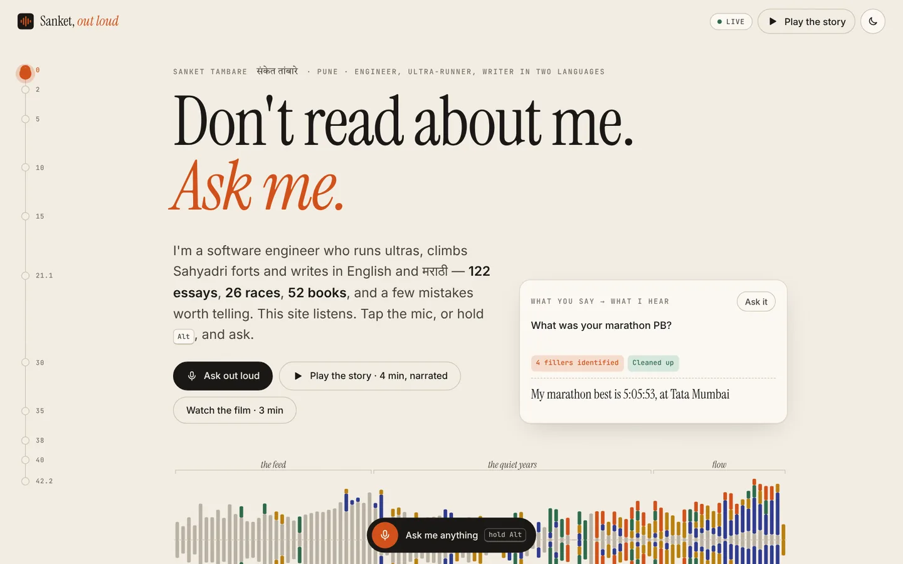
14:12:31 → 14:22:06 · 29 screenshots read in the session
It looked before it shipped.
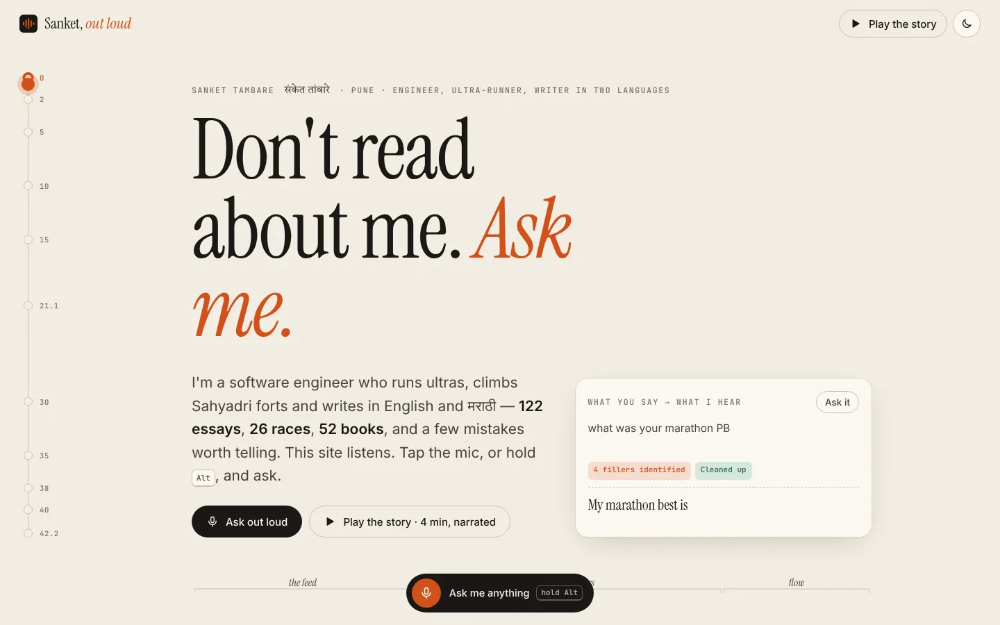
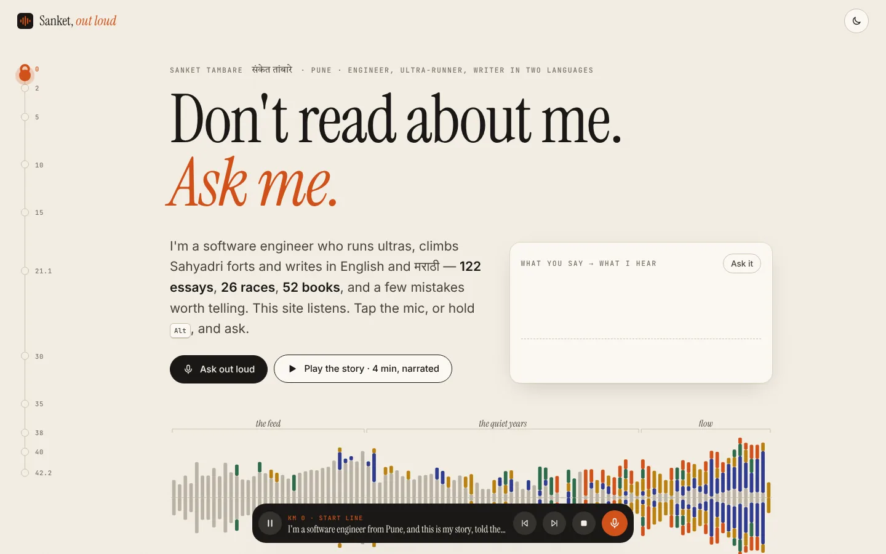
14:13:01 · before14:16:20 · afterAt 14:12 the build passed and Claude opened a real browser. At 14:14:50 it wrote: “Fixing a list of layout issues I spotted.”
- 14:15:13Wall cards collapsed into slivers — the grid gets a minimum width.
- 14:15:13Hero headline wrapped onto three lines and pushed the waveform off screen.
- 14:15:13Offline column squeezed; shelf boards misaligned; copy details.
- 14:15:39Narration gets a watchdog for engines that never fire
onend. - 14:18:14“Hold Alt” hints hidden on touch screens.
- 14:21:45A 404 thumbnail from a deep-archive card now hides itself.
- 14:21:57Month bars realigned under the 79/100 ring.
Everything Claude looked at — tap to open
14:18:02 → 14:18:33
A night run, and a phone in a pocket.
Paper and ink by day; a night run after dark, chosen by the system or a toggle. On wide screens a runner moves down a kilometre rail by distance, not pixels; on a phone it becomes a progress line.
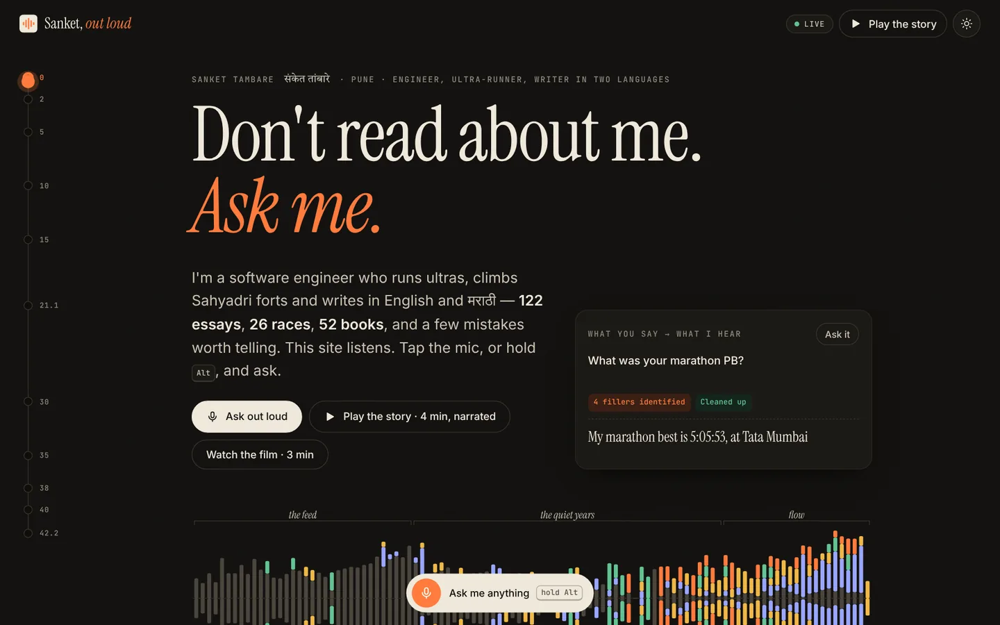
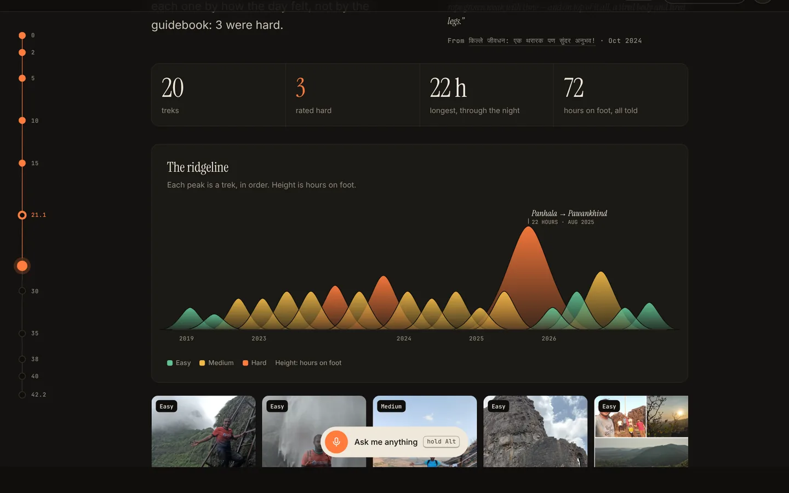
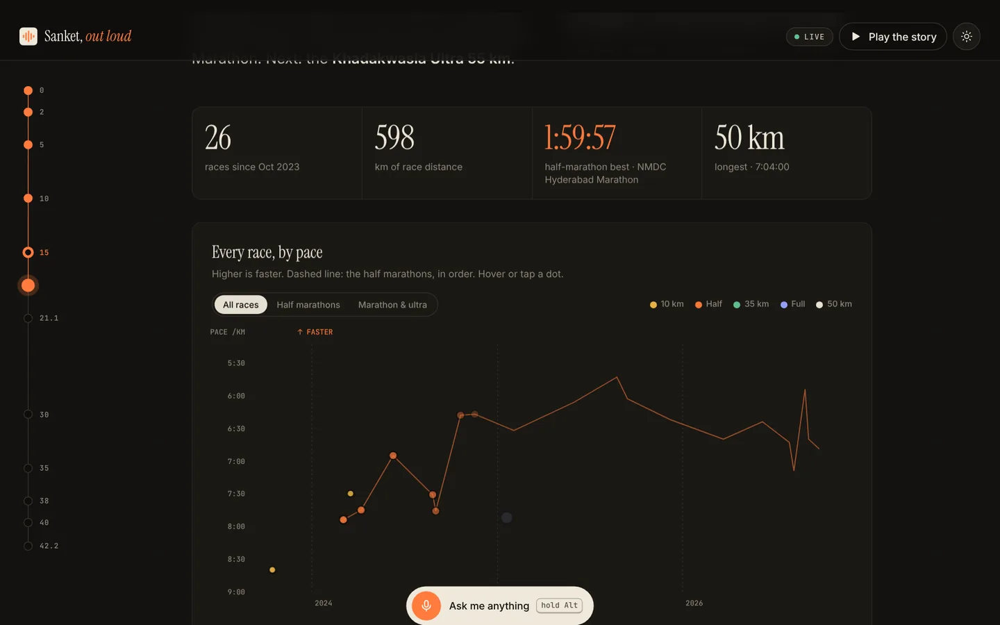
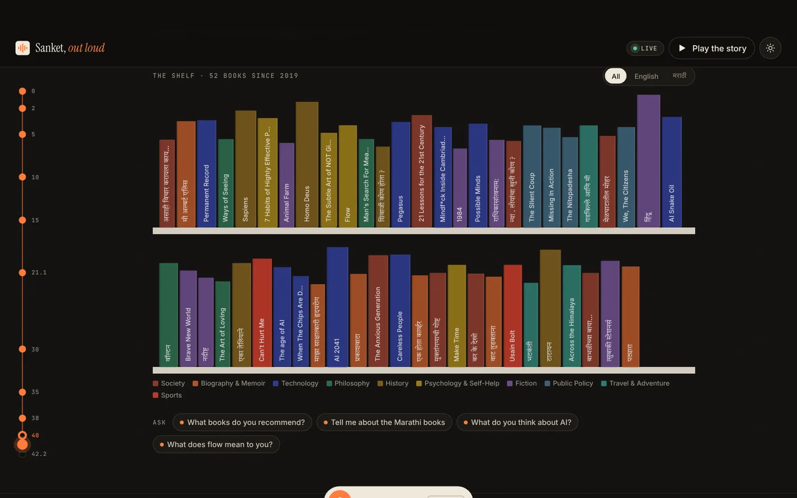
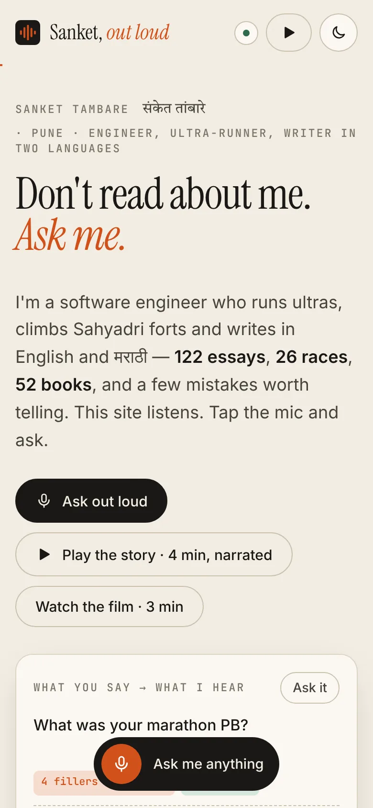
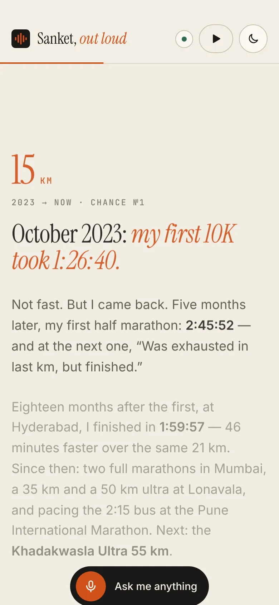
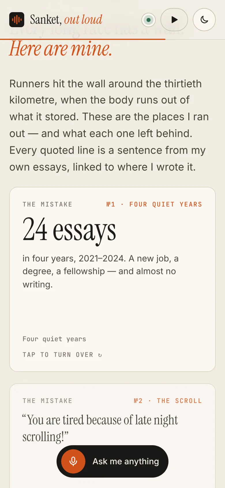
CLAUDE.md · 14:20:08
Rules it left for the next session.
Before shipping, the session wrote down the rules it had been following, so the next one would too. Side B did — and added two of its own.
CLAUDE.md — Sanket, Out Loud
- Numbers come from
derive.js. Never type a count into a component or the narration. - Quotes are fragments looked up with
d.quote(), never pasted text — and a test fails if one disappears. - The quick-answer engine never generates. Can't answer? Return
confident: false, offerDeep: true. - Named things before broad topics — “RunFolio” must not match “run”.
- Chapters are data first: km marker and narration in
story.js. - Speech fails soft: no recognition → the text box; no synthesis → captions.
npm testandnpm run buildbefore committing; update the changelog.
Added on side B: all content fetched live by archive.js — the admin dashboard is the only editor · the film's narrator speaks about Sanket, never as Sanket.
14:22:25 → 14:47:03
Take one, shipped.
Forty minutes and six seconds after the first prompt: tests green, build clean, pushed — with a contact sheet for the human and one honest line: “It isn't live yet, because I can't deploy from here.”
Directly commit on main
main created it, with the site as its only commit.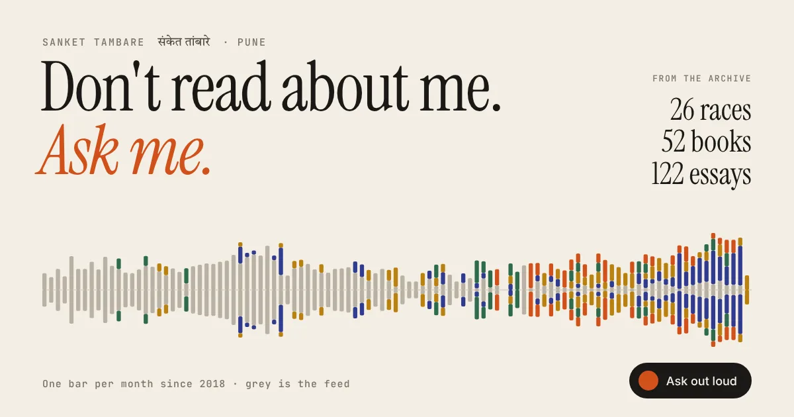
COMMIT RECEIPT
- committed
- 14:22:28
- files
- 47
- lines added
- +6,425
- tests
- 14 / 14 pass
- build
- clean
- turn length
- 40 min 06 s
- model steps
- 128
Side B · live data and the film · prompt 3 of 4
Ninety words, and a bigger ask.
- 1
features.md, learnings.md
Written at 15:00 and 15:01: slide-ready, one section per slide. This deck is built from them. - 2
narrated video using remotion
Thirteen scenes in Remotion, narrated by Piper's en_GB-cori-high voice. - 3
3 min horizontal and vertical
Exactly 180 seconds, at 1920×1080 and 1080×1920. - 4
User switches toggles between video size
One player; switching shapes keeps your place (64.0 s before, 64.0 s after). - 5
integrate the supabase… fetched from API
No data in the bundle any more: every visit reads the live tables. - 6
SINGLE ADMIN DASHBOARD
The main site's /admin stays the only editor. Nothing to edit here.
src/lib/archive.js · 14:57:33
One mapping, many readers.
The first refactor of side B: one module fetches every source and turns rows into the story's shape. The page, the tests, the share card and the film all call it — so when the page and the film disagree, there's only one place either could be wrong. Pick a reader.
14:58:48 → 15:00:06
Live data needs a loading story.
At 14:59:15 Claude measured it: “9.9 s to first paint is too slow.” The fix is three layers, each visible — the last fetch from this browser renders at once, the live fetch replaces it, and a labelled snapshot covers an outage.
No data in the bundle any more — about 94 KB of script over the wire, gzipped.
PostgREST returns at most 1,000 rows — the micro-posts are 1,677
Paged one after another, the load time doubled; now both pages are requested at once.
15:00:34 · 15:01:14
Then it wrote the brief for this deck.
Two documents, asked for “to create presentation and narrated video”: features.md (what the site does) and learnings.md (what the archive teaches, and what building it taught). Each ## is one slide or one scene. The film was cut from them at 15:02; this deck, later the same day, from the same pages.
Every lesson in part one stands on a sentence Sanket wrote, quoted exactly and dated — the same rule the site keeps.
features.md
- The idea in one line
- Live data — one editor
- The voice bar
- Two kinds of answer
- Voice commands
- Story mode
- The course
- The visualisations
- Honesty by construction
- The film
- Craft
learnings.md
- Showing up beats starting fast
- Friction decides output
- Habits unwind slowly
- Finish what you start
- Clarity before code
- Rest is training
- Patience is a strategy
- Flow is no friction
- Show the edit
- Never say what data can't back
- Browser speech is uneven
- A loading story
- Limits at scale
- One mapping
- Guard rails
- Words have boundaries
- Write for the ear
- Don't borrow a voice
video/script.js · 15:02:57 → 15:03:49
Three minutes holds 402 words.
The first script came out at 594 words. Rather than guess, Claude timed the voice: Piper reads about 2.3 words a second. So it cut to 402, rendered the narration, measured 166.6 seconds with pauses, and padded the film to exactly 3:00.
The site calls it mistake №1.
The site calls it mistake number one.
video/Film.jsx · 38 KB · 15:07:34
Thirteen scenes, drawn from the same data.
One composition renders both shapes. Before committing eight minutes to a render, Claude narrated every line and rendered one still per scene in both shapes — then fixed what the contact sheets showed. Tap a scene to watch from there.
15:11:22 — the one hiccup: the renderer's headless browser didn't trust the container's proxy certificate. Fonts and images were made local, and the stills rendered.
Rendered 15:14 → 15:22 · two shapes in 8 minutes
Watch it: three minutes, two shapes.
The same toggle as the site: pick a shape and it keeps your place. Captions come from the narration, and the chapters from the render's own chapter file. The narrator speaks about Sanket, never in Sanket's voice.
Web copies re-encoded for this deck. Piper en_GB-cori-high narrates; the music bed is the main site's own loop.
COMMIT RECEIPT
- committed
- 15:23:41
- files
- 38
- lines
- +6,314 −529
- tests
- 17 / 17 pass
- film
- 180.0 s × 2 shapes
- turn length
- 30 min 28 s
- model steps
- 74
15:23:37 → 15:59:07
Take two, shipped. Then nothing left to push.
Live data, two documents, a film in two shapes and a player on the site — committed straight to main, as asked. The last prompt came thirty-five minutes later.
Push changes to main
Honest to the end: it checked the remote instead of pushing an empty commit to look busy.
Side C · to the open web · a second session, 16:23 → 19:23
A story nobody's crawler could read.
The session titled “SEO audit and Cloudflare deployment” found the site was a client-rendered app: link previews and crawlers that don't run JavaScript got an empty #root, a relative share image, no canonical, no sitemap — and every unknown path answered 200 with the home page.
The fix: prerender all eleven chapters at build time and hydrate them in the browser, with the head tags, JSON-LD and crawler files generated from the same archive. Largest paint under a 4× slower CPU: ~1.5 s → ~0.35 s.
19:13:14 → 19:23:08 · v2.1.0
The merge that built neither.
Live data (v2.0.0) and prerendering (v1.1.0) reached main together. The build read a file that had moved, the app mixed both setups, and a test failed. Then came the session's last prompt:
Add remaining changes, pull latest changes from main. Add next commit to main directly, make sure changes are working end to end
Lighthouse, measured in the session · 16:36 → 19:23
Accessibility 87 → 100. Longest task 664 → 172 ms.
The first audit at 16:36 read: performance 48, accessibility 87, best practices 100, SEO 100. By 19:23 the session reported accessibility, SEO and best practices at 100, with 24 of 24 tests passing.
Main-thread work at 4× CPU throttle. Largest contentful paint ≈ 0.3 s.
- a11yInvalid list and tab roles on the trek strip, bookshelf and then/now dots became labelled groups.
- a11y“Play the story” got a name when its label hides on phones; the skip link shows on focus.
- a11yContrast: muted text darkened, and a deeper saffron for small text.
- perfHydration and live updates run as transitions; an unchanged archive skips the re-render.
- perfScroll position moved to its own context, so scrolling redraws the rail — not every chart.
a624625 · ac384b5 · 19:50 → 19:53
Live at v2.sankettambare.in.
The canonical address, Open Graph URLs, sitemap and robots file now follow the custom domain, and every *.pages.dev copy is noindex. The last commit fixed a hero “Watch the film” button that threw, and made the voice steadier.
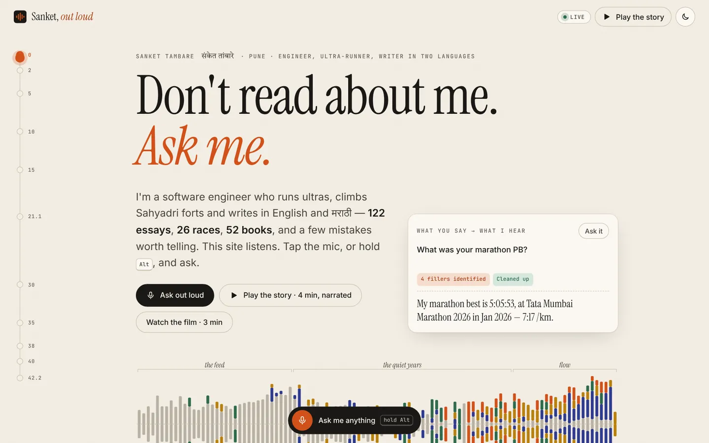
- voiceSpeaks in chunks of up to ~220 characters instead of one sentence at a time — fewer gaps, steadier intonation.
- voiceNeural voices (Edge “Natural”, Apple Premium, Google) are ranked above the old desktop engines.
- webUnknown paths get a real 404 — “Off course. It happens.” — instead of the home page with a 200.
- micA “network” error (Brave blocks the speech service) retries on-device before giving up; holding Alt keeps listening through pauses.
speakable() — what the voice is handed
The site's own function, unchanged: dashes, brackets and dots become pauses; times, “km”, “PB” and “10K” are read the way a person would.
Liner notes · learned at 14:15:39
Browser speech is uneven. Design for the worst engine.
The Web Speech API is the same API with very different engines behind it. Five warning lamps from the build — press one.
Liner notes · engine fixes at 13:57:25
Words have boundaries.
Matching intents taught the classic lessons: RunFolio is not a run, 2022 contains 22, and bet hides inside between. So named things are checked first, and everything is matched on word boundaries.
Liner notes · learnings.md, 15:01:14
Honest by construction.
Quotes are looked up, not pasted.
A single sentence, found by a fragment, linked to its essay. A refresh can't put words in anyone's mouth — a test fails instead.
Counts are never zeroed or guessed.
A missing value is left out. One book has no page count, so the shelf says “more than 14,000 pages”.
Mistakes in Sanket's own words.
Each card on the wall is quoted from the essays, with what it left behind.
A synthetic voice borrows no identity.
Story mode speaks in the first person because a visitor starts it in the browser's voice; the film's narrator speaks about Sanket, never as Sanket.
The archive, disagreeing with itself — found while building
Tata Mumbai Marathon 2025 is stored as 42 km with the note “First HM in Mumbai”, while 2026's note says “My first full marathon”.
Possible Minds is filed under 2025 but was finished on 9 July 2024; Permanent Record under 2022 but finished in August 2020.
One book has no page count — so no total is claimed. Fix any of these in /admin and every page, answer and film follows.
Liner notes · the credits
255 words from a person. 201 tool calls from Claude.
The human · 4 prompts
Still the human's job, said Claude
- Deploy it — “I can't deploy from here.”
- Read the first-person copy and make it sound like Sanket.
- Record a voice: drop
run-0.wavintovideo/voice/and the film uses it. - Fix the archive's own disagreements in /admin.
Claude Code · 71 minutes of work across 2 h 16 min
Plus 52 progress notes, 2 commits, 0 questions asked and about 343,000 tokens written — from the session's own record.
Liner notes · the first tape, and the repo today
By the numbers.
42.195 km · end of tape
“I just start and the words just appear!”— Sanket, Chronicles of Wandering Mind: S2-E02, June 2026
That is also the best description of what voice does to typing — and of what four prompts did to a website.